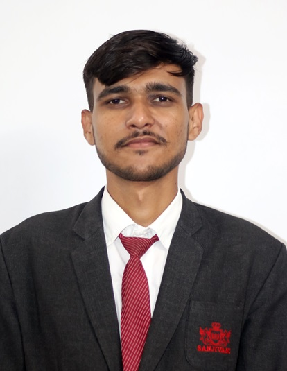

|  |
Versatile electronics and computer engineer with a keen eye for photography, graphic design, and videography. Excels in managing multiple projects with precision and creativity. Strong technical proficiency in industry-standard
software and a passion for delivering high-quality work under tight deadlines.
|
Education
- Bachelor of technology in Electronics and Computer,Sanjivani College Of Engineering Kopargaon.
- Higher Secondary School ,Karmveer Bhaurao Patil Junior College Ashvi khurd.
- Secondary School ,Karmveer Bhaurao Patil Vidyalay Ashvi khurd.
WORK EXPERIENCE
Jan2023 - Jul2023
- Incharge Of Photography, SCOE (Student Activities Council)
- Technical Member - SARC(Student Alumni Relation Council),Sanjivani College of Engineering Kopargaon
- Executive Member -EDC(Entrepreneur Developement Cell)Sanjivani College of Engineering Kopargaon
- Represented Sanjivani College of Engineering at IEEE IB-SYWLC 2023 Conference ,Annasaheb Dange College of Engineering and Technology, Ashta, Sangli
SKILLS
- HTML
- CSS
- Java script
- nodejs
- reactjs
- Photography
ACHIEVEMENTS
- Volunteer Of National Service Scheme(NSS):
In January, I successfully completed a 7-day residency camp in Nategaon Taluka Yeola district, Nashik.
- Research Paper:
GIS SCIENCE JOURNAL - " Unveiling Leopard and Hyena Behaviour with an Automated Monitoring System"
- 1st Prize in Photography in YIN kalamahotsav:
YIN Kala Mahotsav is a competition festival organized by Sakal News Network, held all over Maharashtra, where multiple types of competitions are organized.
- Core member of Helping Hands Group